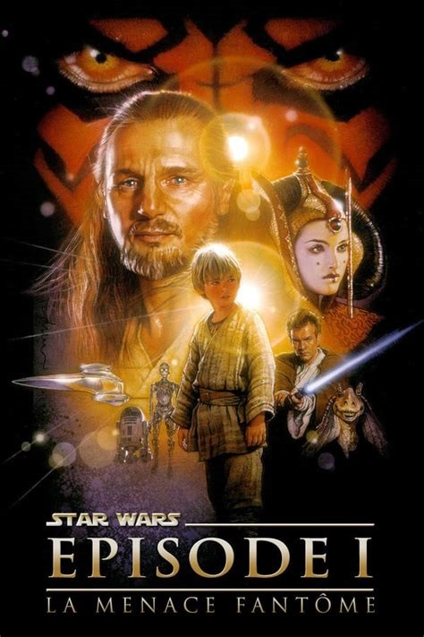

Anakin Skywalker
La prélogie, composée de La Menace fantôme (1999), L'Attaque des clones (2002) et La Revanche des Sith (2005), explore l'enfance et la jeunesse d'Anakin Skywalker, détaillant les raisons et les circonstances de sa transformation en personnage malfaisant.
Son éducation en tant que Jedi auprès d'Obi-Wan Kenobi, son basculement du côté obscur de la Force pour devenir l'apprenti et le bras armé de l'empereur Palpatine, sa rédemption finale lui permettant d'accomplir sa destinée — ramener l'équilibre dans la Force et éliminer les Sith — et le fait qu'il soit le père des jumeaux Luke Skywalker et Leia Organa, constituent l'intrigue principale des deux premières trilogies.

| Apparaît dans : | La Menace fantôme, L'Attaque des clones et La Vengeance des Sith | Première apparition : | Un Nouvel espoir |
|---|---|
| Affiliations : | Ordre Jedi/République galactique, puis Sith/Empire galactique |
| Race : | Être humain, puis cyborg |
| Genre : | Masculin |
| Planète d'origine : | Tatooine |
| Métier : | Chevalier de l'Ordre puis Seigneur Sith |
| Côté de la force : | Lumineux, puis obscur |
Rôle dans l'histoire
Dans La Menace Fantôme , Anakin est un enfant de petite taille aux cheveux courts et blonds (coupe au bol) et aux yeux bleus, pilote de module de courses. Il est esclave sur Tatooine. À la fin du film, il porte la coupe de cheveux (avec la tresse signifiant qu’il est apprenti) et les vêtements des Padawan.
Dans L'Attaque des clones, il est devenu adulte et a donc considérablement grandi. Il mesure dans les 1,80 m et arbore toujours la coupe de cheveux des Padawans. Lors du duel final contre le comte Dooku, il se fait trancher l'avant-bras droit et est contraint de porter une prothèse mécanique.
Dans La Revanche des Sith, il a considérablement laissé pousser ses cheveux et une cicatrice est présente sur sa tempe droite. Durant le massacre du Conseil Séparatiste, ses yeux sont jaunes et injectés de sang, ce qui montre une forte emprise du côté obscur. Lorsqu'il perd son duel contre son ancien maître Obi wan Kenobi, à la fin de l'épisode III, il perd en même temps le dernier bras qui lui reste, ainsi que ses deux jambes. La colère et la rage déforment son visage avant que son corps ne soit presque entièrement brûlé par de la lave en fusion. Son corps sera désormais couvert de cicatrices et de traces de brûlures et pour survivre, Anakin sera enfermé dans une sombre armure de survie qu'il occupera jusqu'à la fin de sa vie.